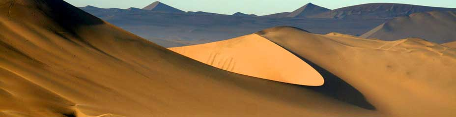

Shore excursions to Tambo Colorado



Discover an Inca Treasure
From San Martin harbor
Detail
Tambo Colorado (Red Branch) is located 60 Km from Paracas city, this Inca archaeological site is well preserved in the coastal kingdom of Incas, the palace was painted with red, white and yellow gold, the yellow gold painting accentuate mostly the trapezoidal niches. Tambo Colorado was built at the end of the 15th century probably ware used to control commercial trading and integrating the locals into Inca Religion. The Tambo Colorado palace is surrounded by sacred sites like temples, pyramid, platform for praying and a great trapezoidal chapped plaza
Include:
- Limited to 18 Participants.
- All entrance fees
- Pickup and drop off directly from the harbor
- English speaking Guide
- Certified tourist bus ( air-conditioned bus ).
- English-speaking guide
Not Include:
- Extras & gratuities.
8:00AM
Pickup from the harbor.
9:30AM
Arrival to Inca archaeological site.
9:45AM
Touring at Tambo Colorado. A guided walk around the Inca palace, including its interior. This lasts for 1 hour with photo stops.
10:45AM
Free walking by yourself after the group tour.
11:15AM
Return to Pisco city.
12:15PM
Short stop in the Plaza of Pisco. Opportunity for lunch (on your own) or a Pisco sour.
1:30PM
Bus ride to Paracas nature Reserve.
2:00PM
Touring Paracas nature Reserve. This tour can last for 1.5 to 2 hours. The reserve is right next to San Martin's harbor, so the return is quick.
3:45PM
End of our services. Return to the harbor.
Cruise service 2025
- August 27. → CORAL PRINCESS / Princess Cruises
- October 20. → MS ZAANDAM / Holland America
- November 25. → MS OOSTERDAM / Holland America
- December 13. → SAPPHIRE PRINCESS / Princess Cruises
- December 17. → OCEANIA MARINA / Oceania Cruises
- December 18. → CELEBRITY ECLIPSE / Celebrity Cruises
- December 18. → SILVER NOVA / Silver Sea
- December 19. → SEVEN SEAS SPLENDOR / Regent Seven Seas
- January 15, 2026. → SILVER NOVA / Silversea
- January 16, 2026. → NORWEGIAN SUN / Norwegian Cruise
- January 16, 2026. → SEABOURN QUEST / Seabourn
- January 17, 2026. → AZAMARA ONWARD / Azamara Cruises
- January 29, 2026. → SERENADE OF THE SEAS / Royal Caribbean
- January 31, 2026. → AMADEA / Phoenix Reisen
- February 03, 2026. → COSTA DELIZIOSA / Costa Cruises
- February 27, 2026. → NORWEGIAN SUN / Norwegian Cruise
- March 23, 2026. → SAPPHIRE PRINCESS / Princess Cruises
- March 24, 2026. → MS OOSTERDAM / Holland America
- March 30, 2026. → SILVER NOVA / Silver Sea
- April 11, 2026. → CELEBRITY ECLIPSE / Celebrity Cruises
- April 12, 2026. → AMERA / Phoenix Reisen
- Julio 25, 2025. → CORAL PRINCESS / Princess Cruises
Price:
95$
Book Now